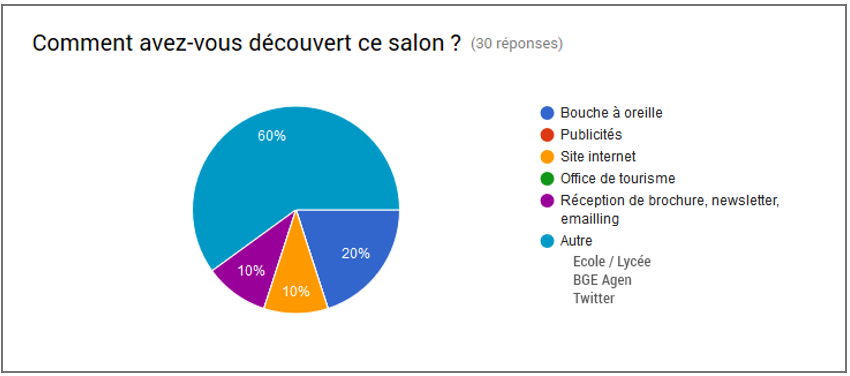

NUMERI'COM
Un projet de formation humaine réaliser dans le cadre de ma formation à IN'TECH SUD. Celui-ci met en valeur des techniques de communications et de publipostage pour attirer un maximum d'exposants et visiteurs, dans la premiere évenement numérique de la région.
communication gestion de projet transverseLe projet
Un projet de formation humaine réaliser entre septembre 2016 et février 2017 dans le cadre de ma formation à IN’TECH SUD avec 3 autres camarades de classe. La coorganisation du 4ème édition du NUMERIC’DAY, l’évènement de la région destinée aux professionnel du numéque à était proposée par eTIC47, et la CCI du Lot-et-Garronne .
Contexte
eTIC47 structure, organise et promeut la filière numérique du Lot-et-Garonne. Le NUMERIC’DAY est l’occasion de découvrir toutes les compétences numériques disponible localement, d’assister à des conférences sur des sujets sensibles et de partager un moment de convivialité autour du numérique.
La CCI (Chambre des Commerces et de l’Industrie) est une organisation publique, qui aide et accompagne les entreprises et professionnels de la région dans leurs projets.
Quelques chiffres:
- Pas moins de 200 visiteurs en moyenne par édition;
- Une retransmission directe continue sur les radios locales;
- et plus d’une trentaine d’exposants.
Objectifs
Notre première mission sur le projet était d’aider à la communication autour de l’évènement, recruter de nouveaux adhérents pour eTIC47 et exposants pour le salon.
Entre temps, nous avions une autre mission qui était de prendre en main les outils technologiques (petits robots humanoide) du Fab’Lab de la CCI, et de trouver une application autour ces mêmes outils afin de les exposer à l’évènement.
Un Fab’Lab (Fabrication Laboraory) est un tiers-lieu de type atelier de fabrication ou on laissen court à l’imagination, et chacun est invité à s’exprimer librement.
Ma contribution
Sur ce projet, j’avais un rôle d’équipier, avec un fort investissement, notament en étant sur les deux tableaux:
- la recherche des exposants du salon;
- l’application autours des petits robots.
Et enfin, faire des comptes redus hébdomadaire sur notre avancement.
Résultats
L’évènement du NUMERIC’DAY
La 4ème édition du NUMERIC’DAY s’est tenue le mardi 15 novembre 2016 à l’espace François Mitterrand à BOE. La préparation des stands s’est déroulé la veille durant l’après-midi. Nous avons participé à la mise en place de l’évènement avec l’équipe d’eTIC47 : installation des tables, du réseau électrique, du projecteur pour les conférences, l’équipe a bien entendu aider à la mise en place et a participer à chaque étape.
Déroulement de la journée
le programme étant très chargé, nous ne retiendrons que ces quelques lignes:
7h50 : Arrivée sur le lieu de l’évènement, mise en place et vérification des éléments de dernière minute.
8h00 : Ouverture du NUMERIC’DAY et accueil du public. Un des membres du groupe a été affecté à l’accueil afin de gérer les nouveaux arrivants.
8h30 : Conférence sur l’impact des nouvelles exigences fiscales sur le numérique.
9h00-12h00 : Démonstration et animations sur le stand de la CCI et l’imprimante 3D, le scanner 3D et les robots lego MindStorm piloté par l’équipe.
….
16h30 : Conférence de Maître HAAS sur les enjeux juridiques du numérique.
….
20h00 : Mise en place et service du buffet de fin de journée.
REX sur l’évènement
L’évenement étant bien préparer en amont, nous avons su palier à de nombreux manques de la part de nos partenaire, et avions pu les aider lorsqu’ils avaient besoins de nous.
Ayant eu la chance de rencontrer et assister à une conférence de Maître HAAS et d’avoir été parmis les premiers à être informer de la mise en place de RGPD (Règlement Général sur la Protection des Données) est un évènement marquant.
Entre exposition, aide à l’accueil et enquête de satisfaction, ous avions eu une journée pleinement remplie.
Quelques lignes sur le questionnaire de satisfaction.
Nous avions pu recenssé 84 visiteurs qui ont bien voulus répondre à notre questionnaire sur les sujets suivants:

Quant on leur demandait pourquoi ils étaient présent :
Le niveau de satisfaction quant au choix de la date, du lieu et des horaires:
Une participation pour la prochaine édition ?
Finalement les notes sur l’évènement:
Leçons à entirer lors de l’évènement :
- Conférences un peu courtes et purement informatives mise à part celle de M. HAAS;
- Stands peu variés;
- Attirer de plus grosses entreprises;
- Faire appel à un organisateur de salon;
- Aucun accusé réception envoyé suite à une inscription par internet;
- Réalimentation du buffet et des croissants.
Points négatifs :
- Pas d’accueil / d’informations pour les visiteurs sur les différentes entreprises présentes lors de l’évènement;
- Pas de plan;
- Pas d’équipe dédiée à l’organisation de l’évènement;
- Obligation de gérer l’accueil;
- Certain stand vide / peu fréquenté – mauvaise information des visiteurs sur les stands.
Points positifs :
- Conférence M. HAAS très intéressante;
- Disposition des stands plutôt réussie.
Conclusion
La journée c’était bien déroulé, nous avions pu faire face à tous les imprévus et réussi à accueillir les visiteurs dans de bonnes conditions.
Certains points à améliorer au niveau de l’organisation. Peut-être que nous aurions pu soit travailler sur la communication et l’organisation du NUMERIC’DAY soit communication et la mise en place d’une animation, et non les deux à la fois qui représentaient un challenge considérable pour les 4 binôme que composaient l’équipe.
Ce projet m’a permis de voir comment le monde l’évementiel fonctionne, et en même temps, il m’a permis d’améliorer mes compétences en comminication aqcuisent au projet C’ITI .